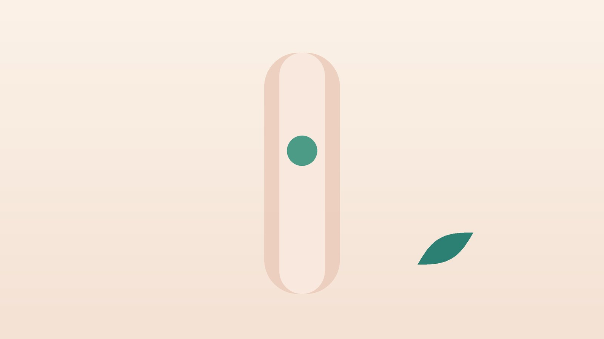

건강 칼럼 · 인천 매핵기 한의원
목에 뭔가 걸린 듯 답답하다면, 매핵기(목 이물감) 한방 치료

나의 목 이물감, 이런 모습인가요?
- 목 가운데나 울대 근처에 무언가 걸린 느낌이 하루에도 여러 번 든다
- 밥을 먹을 때는 오히려 괜찮고, 침만 삼킬 때 더 느껴진다
- 자꾸 헛기침을 하거나 '흠흠' 하고 목을 가다듬게 된다
- 신경 쓰는 일이 있거나 화가 난 뒤 더 답답해진다
- 신물이 올라오거나 가슴이 쓰린 날이 있다
- 내시경에서 큰 이상은 없다고 들었는데 느낌은 그대로다
이 체크리스트는 진단 도구가 아니라 상담이 필요한지 가늠해 보는 참고용입니다.
목에 뭔가 걸린 느낌은 왜 생기나요?
소화기 기능성 질환의 국제 기준인 로마 IV(Rome IV)는 아프지 않은 목 이물감이 식사와 식사 사이에 반복되고, 삼킴곤란이나 삼킬 때의 통증이 없으며, 내시경 등에서 구조적인 원인이 보이지 않을 때 이를 기능성 인두이물감으로 분류합니다. 기준상 최근 3개월 동안 일주일에 한 번 이상 증상이 있어야 하며, 검사에서 큰 병이 없다는 것을 먼저 확인한 뒤 붙이는 이름이라는 점이 중요합니다.
원인으로 가장 자주 거론되는 것은 위산이나 위 내용물이 목까지 올라와 인두를 자극하는 인후두 역류입니다. 코 뒤로 넘어가는 콧물(후비루), 목 주변 근육과 식도 위쪽 조임근의 과한 긴장, 갑상선 결절, 오래 말을 많이 하는 습관도 원인이 됩니다. 불안과 스트레스가 클수록 목에 주의가 쏠리면서 느낌이 더 크게 다가오는 경우가 많아, 몸과 마음을 함께 살피는 접근이 도움이 됩니다.
이비인후과 내시경이 먼저 필요한 신호
- 음식이나 물을 삼키기 어렵거나 삼킬 때 아프다
- 특별한 이유 없이 몇 달 사이 체중이 줄었다
- 목에 손으로 만져지는 멍울(혹)이 있다
- 목소리가 쉬어 2주 넘게 돌아오지 않는다
- 피가 섞인 가래나 침이 나온다
- 이물감이 한쪽에만 뚜렷하고 점점 심해진다
- 오래 담배를 피웠거나 술을 많이 마셔 왔다
이런 신호가 있다면 후두·인두의 종양, 식도 질환, 갑상선 질환을 먼저 확인해야 합니다. 생선 가시처럼 실제로 무언가를 삼킨 뒤 생긴 이물감도 바로 이비인후과에서 확인하세요.
한의학은 매핵기를 어떻게 보나요?
한나라 장중경의 『금궤요략(金匱要略)』 부인잡병편에는 '부인의 목 안에 구운 고기 조각이 붙어 있는 듯하면 반하후박탕이 주치한다(婦人咽中如有炙臠, 半夏厚朴湯主之)'는 구절이 있습니다. 2천 년 가까이 된 기록이지만 지금 환자분들이 말씀하시는 '걸린 느낌'과 거의 같습니다. 후대에는 매실 씨가 걸린 듯하다고 하여 매핵기(梅核氣)라는 이름이 널리 쓰였습니다.
한의학에서는 걱정과 울화로 기운이 제때 풀리지 못하는 기울(氣鬱)이 바탕이 되고, 여기에 소화 기능이 약해져 생긴 끈적한 담(痰)이 목에 엉겨 붙는다고 보았습니다. 실제 덩어리는 없지만 기운과 담이 목에서 맺혀 있는 상태라는 해석입니다. 그래서 뭉친 기운을 풀고 담을 삭이는 것, 그리고 위로 치미는 기운(역류)을 아래로 내려 주는 것이 치료의 두 축이 됩니다.
나는 어떤 유형일까?
1. 담기호결(痰氣互結) 기운과 가래가 엉긴 유형
- 이런 분에게 많아요
- 생각이 많고 속이 자주 더부룩한 분
- 나타나는 모습
- 목에 끈적한 것이 붙은 듯하고 자꾸 뱉고 싶다
- 함께 오는 몸의 신호
- 가슴 답답, 트림, 메스꺼움
- 진찰에서 보이는 모습
- 설태가 하얗고 끈적하며 맥이 미끄러움
- 치료 방향
- 기운을 풀고 담을 삭이는 방향 (반하후박탕 계열)
- 오늘부터 해 볼 것
- 식후 바로 눕지 말고 20분 정도 천천히 걸으세요.
2. 간기울결(肝氣鬱結) 스트레스로 조이는 유형
- 이런 분에게 많아요
- 긴장과 화를 참는 일이 잦은 분
- 나타나는 모습
- 감정 변화에 따라 목 답답함이 커졌다 작아졌다 한다
- 함께 오는 몸의 신호
- 한숨, 옆구리 결림, 생리 전 악화
- 진찰에서 보이는 모습
- 혀 가장자리가 붉고 맥이 팽팽함
- 치료 방향
- 막힌 간의 기운을 소통시키는 방향 (소요산·시호소간산 계열)
- 오늘부터 해 볼 것
- 답답할 때 숨을 길게 내쉬는 호흡을 다섯 번 해 보세요.
3. 위기상역(胃氣上逆) 역류가 올라오는 유형
- 이런 분에게 많아요
- 야식, 과식, 커피를 즐기는 분
- 나타나는 모습
- 아침에 목이 칼칼하고 신물과 함께 이물감이 심하다
- 함께 오는 몸의 신호
- 속쓰림, 트림, 헛기침, 목 쉼
- 진찰에서 보이는 모습
- 설태가 누렇고 두꺼움
- 치료 방향
- 위의 열을 식히고 치미는 기운을 내리는 방향 (반하사심탕 계열)
- 오늘부터 해 볼 것
- 저녁은 잠자리에 들기 세 시간 전에 마치세요.
4. 음허(陰虛) 목이 마르고 칼칼한 유형
- 이런 분에게 많아요
- 말을 많이 하거나 갱년기인 분
- 나타나는 모습
- 목이 건조하고 따끔하며 이물감이 오후에 심하다
- 함께 오는 몸의 신호
- 입 마름, 얼굴 화끈거림, 잠을 설침
- 진찰에서 보이는 모습
- 혀가 붉고 설태가 적음
- 치료 방향
- 진액을 보태 목을 촉촉하게 하는 방향 (맥문동탕 계열)
- 오늘부터 해 볼 것
- 미지근한 물을 조금씩 자주 드세요.
한의원에서는 어떻게 진찰하나요?
- 이전 검사 확인: 후두 내시경, 위내시경, 갑상선 초음파 결과가 있으면 가져와 주세요. 검사 전이라면 위험 신호부터 함께 점검합니다.
- 증상 양상: 이물감이 드는 위치, 식사와의 관계, 하루 중 심한 시간, 역류 증상 여부를 여쭙니다.
- 마음과 생활: 최근 스트레스, 수면, 커피·술, 식사 시간을 확인합니다.
- 복진·설진·맥진: 명치와 옆구리의 긴장, 혀의 설태, 맥으로 기울과 담, 역류의 비중을 판단합니다.
침·약침·한약 치료는 어떻게 하나요?
1. 침 치료
- 천돌(天突): 양쪽 쇄골 사이 오목한 곳. 목에 맺힌 기운을 내리는 데 씁니다.
- 단중(膻中): 가슴 한가운데, 양 젖꼭지를 이은 선의 중간. 가슴의 답답함을 풉니다.
- 내관(內關): 손목 안쪽 주름에서 손가락 세 마디 위, 두 힘줄 사이. 메스꺼움과 역류감을 가라앉힙니다.
- 풍륭(豊隆): 종아리 바깥쪽, 무릎과 발목의 중간. 담을 삭이는 대표 혈입니다.
- 태충(太衝): 발등 엄지와 둘째 발가락 뼈가 만나는 오목한 곳. 긴장으로 뭉친 기운을 풉니다.
목 앞쪽은 민감한 부위라 얕고 부드럽게 자극하고, 손발의 혈자리를 함께 써서 부담을 줄입니다.
2. 약침
약침을 시행합니다. 목 뒤와 어깨, 목빗근 주변의 굳은 근육에 적용해 목을 조이는 긴장을 덜어 줍니다. 목 앞쪽의 혈관과 갑상선 부위는 피합니다.
3. 한약
반하후박탕을 기본 틀로 삼되, 역류가 뚜렷하면 위의 열을 식히는 약재를, 스트레스가 크면 간의 기운을 푸는 약재를, 목이 마르면 진액을 보태는 약재를 더해 탕약으로 처방합니다. 위산억제제나 안정제를 드시는 분은 알려 주시면 확인해 처방합니다. 임신 중이라면 진료 때 꼭 알려 주세요. 확인 후 안전한 약재로 처방합니다.
원장님이 네이버 블로그에 진료 이야기와 건강 정보를 꾸준히 올리고 있습니다. 더 많은 이야기는 블로그에서 확인해 보세요.
블로그 보기치료는 어떤 순서로 진행되나요?
- 위험 신호 점검 삼킴곤란, 체중 감소, 멍울이 있으면 이비인후과 내시경을 먼저 안내합니다.
- 첫 한방 진료 유형을 정하고 하루 중 이물감 강도를 0~10점으로 적는 방법을 알려 드립니다.
- 2~4주 주 2회 안팎의 침 치료와 탕약으로 답답함과 역류감을 함께 다룹니다.
- 4~8주 점수 변화를 보며 처방을 조정하고, 식사·수면 습관을 정리합니다.
매핵기는 마음이 편해지고 역류가 줄면서 서서히 옅어지는 경우가 많아, 몇 주 단위로 점수를 비교하며 진행합니다. 치료 기간은 진찰한 뒤 따로 말씀드립니다.
목이 덜 답답해지는 생활 관리
- 헛기침 줄이기: '흠흠' 하는 헛기침은 목을 더 자극합니다. 대신 물 한 모금을 천천히 삼켜 보세요.
- 식사 습관: 천천히 먹고 과식을 피하며, 식후 바로 눕거나 엎드리지 않습니다.
- 역류 유발 음식: 커피, 탄산, 초콜릿, 기름진 음식, 늦은 술자리를 줄입니다.
- 베개 높이: 밤에 신물이 오르면 상체를 조금 높여 잡니다.
- 혈자리 지압: 답답할 때 손목의 내관을 엄지로 10초씩 지그시 눌러 주면 도움이 됩니다.
다른 진료가 함께 필요한 경우
- 삼킴곤란, 체중 감소, 목 멍울, 오래가는 쉰 목소리가 있으면 이비인후과에서 후두 내시경을 받으세요.
- 속쓰림과 신물이 심하면 소화기내과에서 위내시경을 고려하세요.
- 목 앞쪽이 부어 보이거나 갑상선 질환을 앓은 적이 있다면 갑상선 초음파를 확인하세요.
- 불안이나 우울로 일상이 힘들다면 정신건강의학과 진료를 함께 받는 것이 좋습니다.
자주 묻는 질문 Q&A
- Q1. 목에 걸린 느낌이 암일까 봐 걱정돼요.
- 대부분의 목 이물감은 기능성이지만, 삼킴곤란·체중 감소·멍울·피 섞인 가래가 있거나 흡연을 오래 했다면 이비인후과 내시경으로 먼저 확인하세요.
- Q2. 내시경에서 이상이 없다는데 왜 계속 느껴지나요?
- 역류, 목 근육의 긴장, 스트레스가 겹치면 실제 덩어리가 없어도 걸린 느낌이 생길 수 있습니다.
- Q3. 가래를 계속 뱉어 내면 나아지나요?
- 억지로 뱉거나 헛기침을 하면 목이 더 예민해집니다. 물을 조금씩 삼키는 편이 낫습니다.
- Q4. 반하후박탕은 누구에게나 맞나요?
- 기본 처방이지만 목이 마르고 열감이 있는 분에게는 맞지 않을 수 있어 유형에 따라 다른 약재를 씁니다.
- Q5. 역류성 식도염 약을 먹고 있어요.
- 함께 치료할 수 있습니다. 드시는 약 이름을 알려 주시면 확인해 처방합니다.
- Q6. 스트레스 때문이라는 말이 서운해요.
- 꾀병이라는 뜻이 아닙니다. 긴장이 실제로 목 근육과 감각을 예민하게 만들기 때문에 함께 다루는 것입니다.
- Q7. 얼마나 다녀야 하나요?
- 보통 4~8주 정도 이물감 점수를 보며 경과를 확인합니다.
- Q8. 집에서 해 볼 수 있는 것이 있나요?
- 천천히 먹기, 식후 바로 눕지 않기, 내관 지압, 긴 날숨 호흡을 꾸준히 해 보세요.
진료 안내
- 진료시간
- 평일 09:00~20:00 (점심시간 13:00~14:00)
토·일·공휴일 09:00~15:00 - 주소
- 인천광역시 서구 가경주로 46, 2층 (가정동)
인천2호선 가정중앙시장역 인근
영상으로 길 안내 보기 → - 주차
- 한의원 건물 바로 앞 1층 도원주차장
- 예약
- 네이버 예약 바로가기 또는 전화 예약
진료시간은 사정에 따라 바뀔 수 있으니 방문 전 전화로 확인해 주세요.
참고 자료
- Aziz Q, et al. Functional Esophageal Disorders (Rome IV). Gastroenterology, 2016 — 원문
- 장중경 『금궤요략(金匱要略)』 부인잡병맥증병치(婦人雜病脈證幷治), 婦人咽中如有炙臠, 半夏厚朴湯主之
- 질병관리청 국가건강정보포털 — 원문
※ 이 글은 일반적인 건강 정보이며, 개인의 상태에 따라 치료 방법과 결과는 다를 수 있습니다. 정확한 진단과 치료는 진료를 통해 결정됩니다. 침·약침 시술 후 드물게 멍, 통증 등이 생길 수 있습니다.